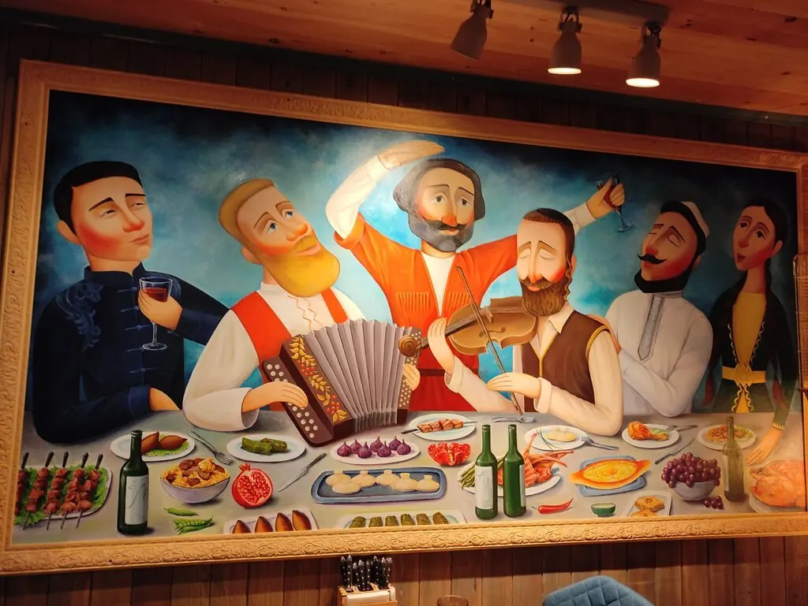
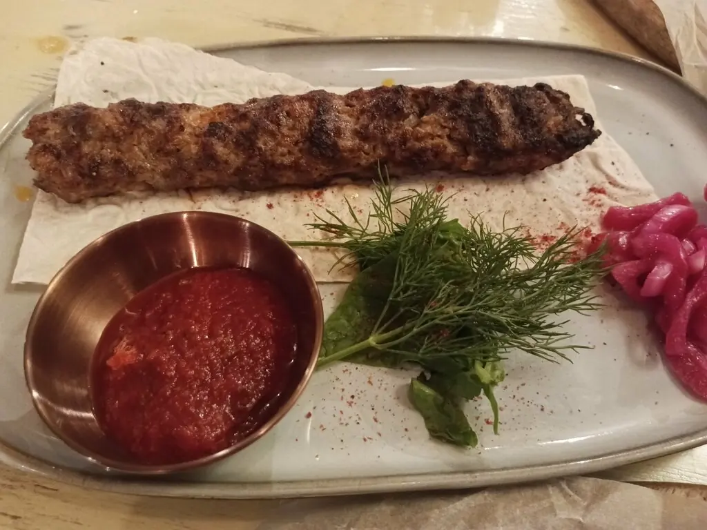
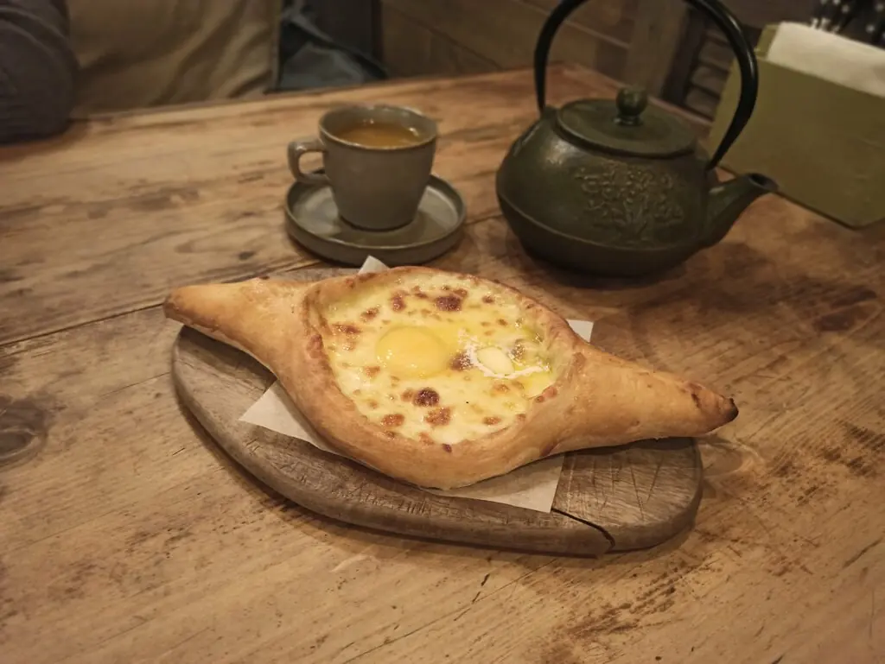
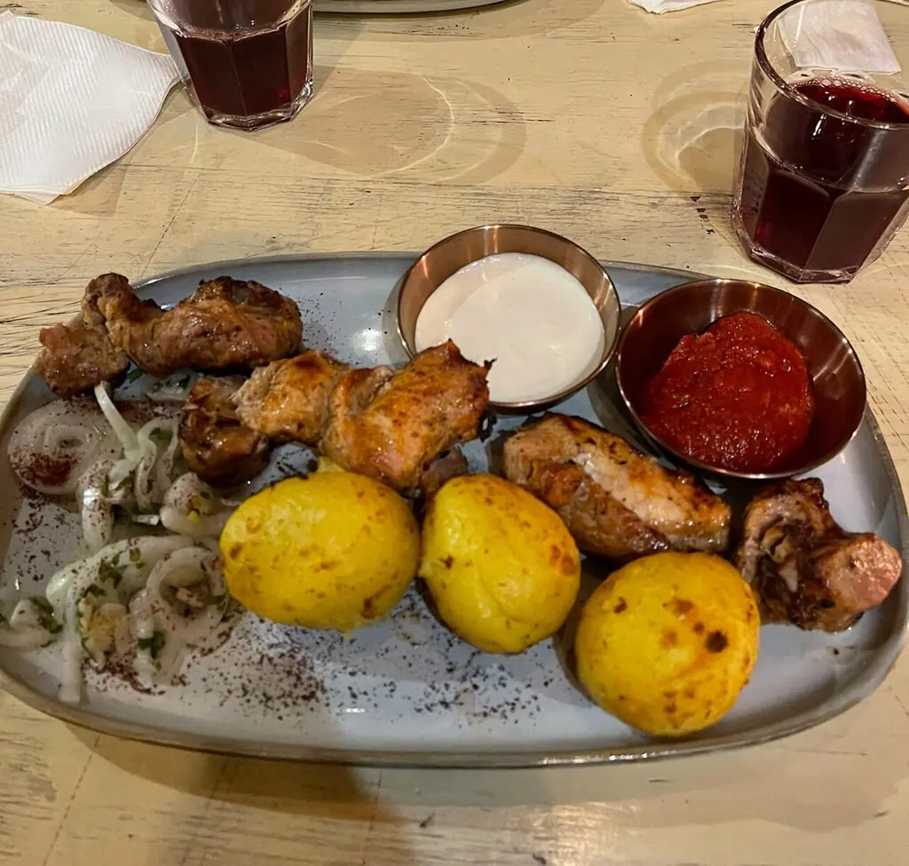
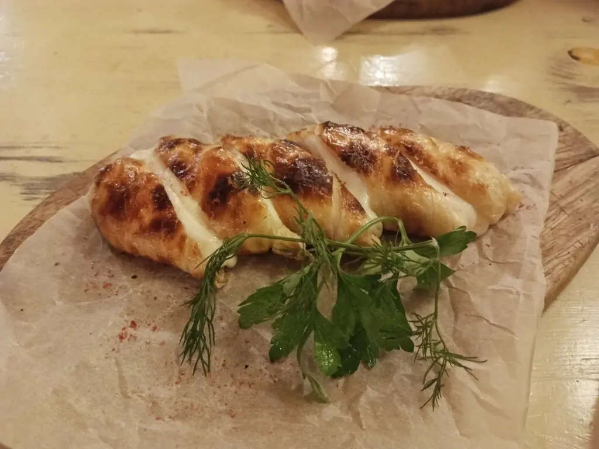
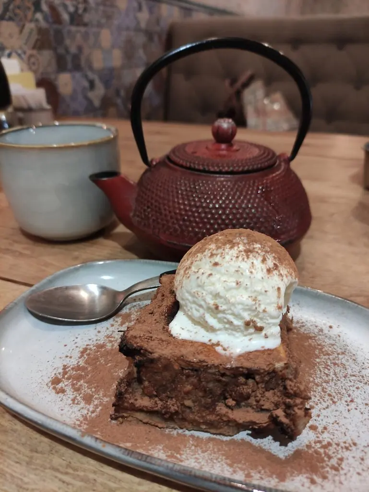
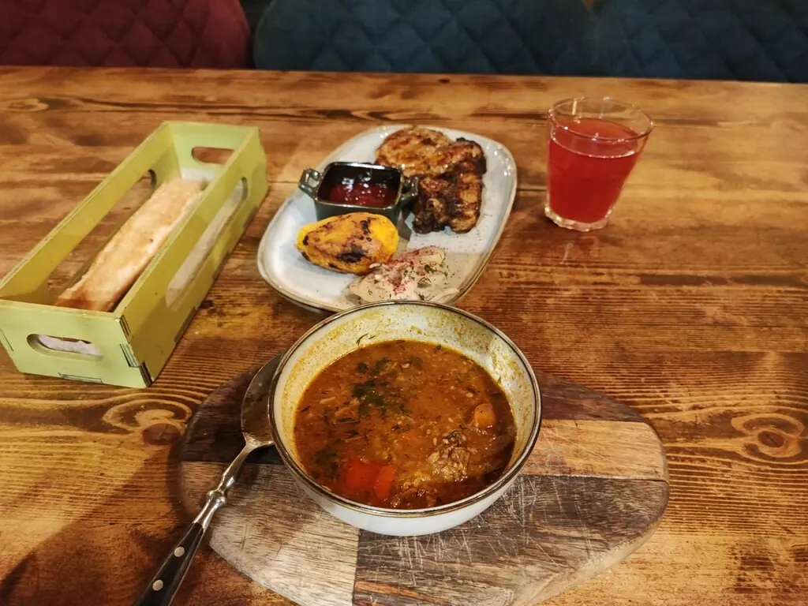
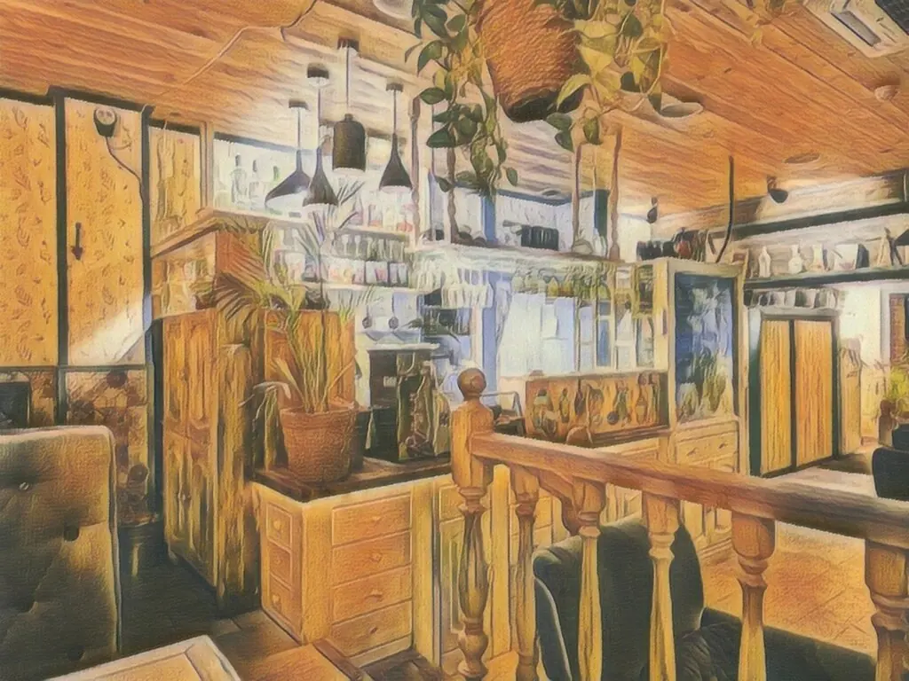

+7 913 820-22-21

Хлеб и соль
Небольшой томский ресторан, где в меню есть родня: сало от дяди Коли, долма от Фрунзика и селёдочка от Ларисы Ивановны.
4,9 · 698 оценок на картах
из семейного альбома
У каждого блюда есть автор

800 ₽Люля из телятины
На углях, с красным соусом. Гости просят повторить.

780 ₽Хачапури по-аджарски
С яйцом, к тому же чугунному чайнику.

350 ₽Картофель на углях
Лучший спутник всего, что с мангала.

650 ₽Хачапури на углях
Тот самый, с дымком.

Десерт и чай
Чтобы никуда не торопиться.

650 ₽Харчо с бараниной
Согреет даже томской зимой.
Сало от дяди Коли490 ₽
Селёдочка с картофелем от Ларисы Ивановны530 ₽
Долма от Фрунзика850 ₽
Сирийская курица775 ₽
Красный борщ с телятиной720 ₽
Шампиньоны на углях475 ₽
Хачапури по-мегрельски975 ₽
Хинкали с сыром, 1 шт.160 ₽
Часть меню с Яндекс Карт, цены уточняйте у официанта.

Дерево, тёплый свет и места немного
Здание из красного кирпича, деревянные балки и большая роспись на стене. Зал небольшой и уютный, поэтому вечером стол лучше занять заранее.
говорят гости
Ну очень атмосферное место! Особенно хорош люля-кебаб из говядины.Екатерина Назарько
Небольшое уютное местечко, где можно вкусно поесть. Шашлык из свиной шеи, хачапури супер!Владимир Чернявский
Атмосферное, ламповое заведение, приятный персонал и шикарное гранатовое вино.Roman Dargil